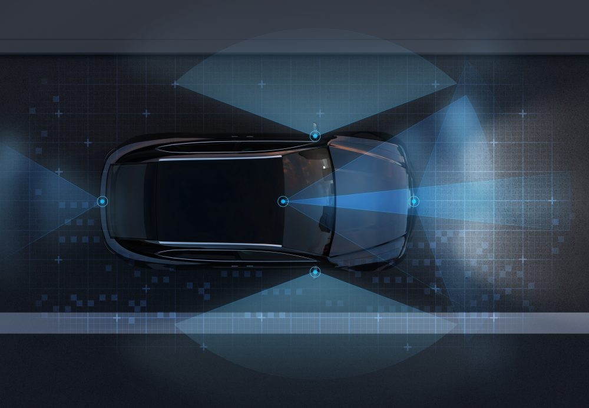
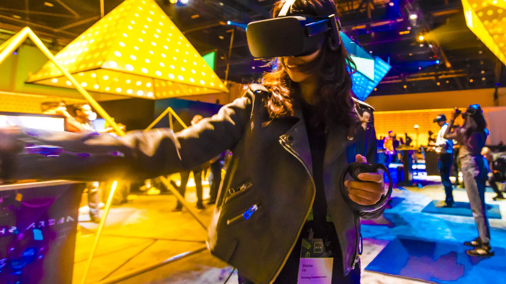

Invest: Exchange and transact bitcoin, ethereum, bitcoin cash, and stellar lumens using the world’s most
trusted and secure cryptocurrency wallet.
Explore: Use the most popular block explorer to search and verify transactions on the Bitcoin, Ethereum,
and Bitcoin Cash blockchains.
Analyze: Stay on top of bitcoin and other top cryptocurrency prices, news, and market information.
The emergence of autonomous things over the last few years, I believe, has been an exciting development within technology that is only going to become more innovative and more and more exciting as time goes on. Autonomous vehicles are constantly collecting data from their environment; such as the road conditions, potential hazards, pedestrians, surrounding vehicles and even storing the routes and roads themselves. In order for these vehicles to become safer they rely on a vast amounts of software and the collection of vast amounts of data to train the artificial intelligence to ensure the safety of their passengers without humans having to intervene.
An immersive experience is an illusory environment that completely surrounds you such that you feel that you are inside it and part of it. The term is associated with technology environments that command the senses such as virtual reality and mixed reality. Immersion enhances everyday experiences, making them more realistic, engaging, and satisfying on all our devices—whether we are playing a video game on our smartphone, video conferencing on our tablet, or watching sports on our Virtual Reality (VR) headset. We can create digital environments for humans to experience the impossible. Through a mix of data science, artificial intelligence, and creativity, virtual and augmented reality offers the opportunity to train and plan in a safe environment, without consequences.
